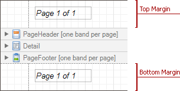

Page Margin Bands
The Top Margin and Bottom Margin bands represent the top and bottom page margins. Unlike other bands, they are not accompanied by strips displaying their titles in the Design Panel.

They are intended for displaying page numbers, or some sort of supplementary information (e.g. current system time or the user name).
In the Property Grid, the properties of these bands are divided into the following groups.
Appearance
Background Color
Specifies the background color for the controls contained within the band. This option is also available in the Formatting Toolbar (
 ).
).Borders, Border Color, Border Dash Style and Border Width
Specify border settings for the controls contained within the band.
Font
Specifies the font settings for the controls contained within the band. Some of these settings are available in the Formatting Toolbar.
Foreground Color
Specifies the text color for the controls contained within the band. This option is also available in the Formatting Toolbar (
 ).
).Formatting Rules
Invokes the Formatting Rules Editor allowing you to choose which rules should be applied to the band during report generation, and define the precedence of the applied rules. To learn more on this, refer to Conditionally Change a Control's Appearance.
Padding
Specifies indent values which are used to render the contents of the controls contained within the bands.
Style Priority
Allows you to define the priority of various style elements (such as background color, border color, etc.). For more information on style inheritance, refer to Understanding Style Concepts.
Styles
This property allows you to define odd and even styles for the controls contained within the bands, as well as to assign an existing style to them (or a newly created one). For more information on style inheritance, refer to Understanding Style Concepts.
Text Alignment
Allows you to change the text alignment of the controls contained within the bands. This option is also available in the Formatting Toolbar.
Behavior
Scripts
This property contains events, which you can handle with the required scripts. For more information on scripting, refer to Handle Events via Scripts.
Visible
Specifies whether the band should be visible in print preview.
Data
Tag
This property allows you to add some additional information to the band; for example its id, by which it can then be accessible via scripts.
Design
(Name)
Determines a band's name, by which it can be accessed in the Report Explorer, Property Grid or via scripts.
Layout
Height
Specifies the band's height, in report units.
Note
Note that this property is tied to the report's Margins.Top (or Margins.Bottom) property, so that changing this property's value will cause the appropriate Margin value to be changed, and vice versa.
Snap Line Padding
Specifies the padding (in report measurement units), which is to be preserved within the band when controls it contains are aligned using Snap Lines.